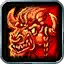
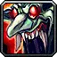
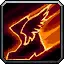
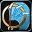
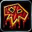

Fury Warrior in WoW Forever
Fury Warrior in WoW Forever
Builds that go deep into Fury, the talents that define the spec, and the best race for a Fury Warrior – from the live game data.
Fury Warrior in the calculator Race picker
Key Fury talents

Improved Berserker Rage 2 ranks
Berserker Rage instantly gives up to 10 Rage and has up to a 100% chance to remove movement-slowing effects.
Death Wish 1 rank
For 30 sec: 20% more Physical damage and immune to Fear, but you take 5% more damage. 10 Rage, 3 min cooldown.

Gore Drinker 2 ranks
After Enrage, Berserker Rage, Bloodrage, Death Wish, Bloodthirst or Reckless Swings, your next 3 melee attacks each restore up to 1% of your max health. The healing causes no threat.

Improved Intercept 2 ranks
Intercept's cooldown is up to 10 sec shorter.

Improved Whirlwind 2 ranks
Whirlwind's cooldown is up to 2 sec shorter, and it deals up to 30% more damage (15 / 30%) to the closest enemy.
Flurry 3 ranks
After a melee crit your next 3 swings are up to 30% faster (10 / 20 / 30%).

Bloodthirst 1 rank
Instant attack for 45% of your Attack Power plus 30, and 10% faster movement for 10 sec. 30 Rage, 6 sec cooldown.
Best race for Fury Warrior
Top-scoring race from our racial scores: Horde first, Alliance below.
| Spec | Leveling | Dungeons & raids | PvP |
|---|---|---|---|
| Arms / Fury DPS | Troll Night Elf | Orc Dwarf | Orc Gnome |
Fury builds
Meta 3
The builds most players run.
Fury dual-wield
Dual-wield Bloodthirst build with Flurry, Improved Whirlwind and full Dual Wield Specialization, taking Arms down to Impale and Anger Management.
Split 17 / 34 / 0 · level order →
LevelingArms leveling
Rend, Overpower and Deep Wounds early, Sweeping Strikes at 30, Mortal Strike at 40, then Fury for crit and rage.
Split 31 / 20 / 0 · level order →
PvPArms PvP
Mortal Strike with Improved Hamstring 3 to stop kiting, plus Fury for Cruelty, Enrage and Piercing Howl.
Split 31 / 20 / 0 · level order →
Off-meta 1
Uncommon builds that can work – try something different.
Other Warrior specs: Arms Warrior · Protection Warrior